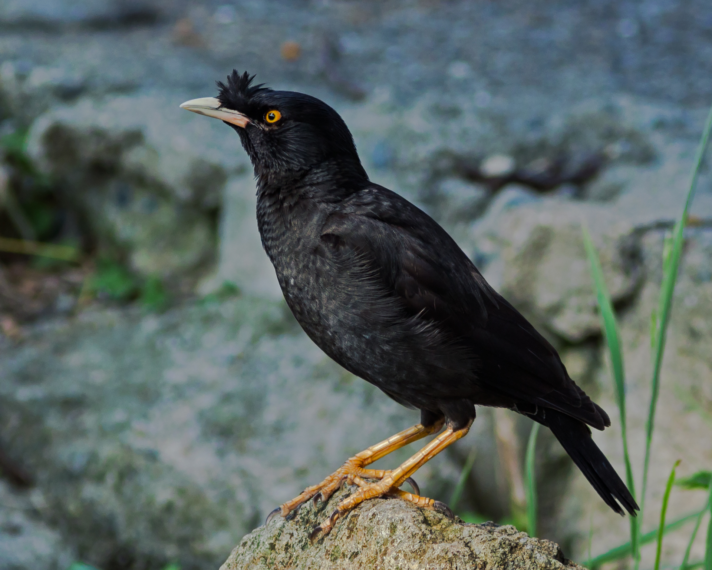

第 10 章
八哥的混音带
北京市海淀区五道口地铁站东南出口，绿化带里有一棵国槐。2013年5月，一个编号HD—047的声学监测点架设在这里，连续记录七十二小时。监测日志第十七页的备注栏里，分析员标出十七处“

八哥的混音带：历史出版插图
图源：维基共享资源 · Laitche · CC BY-SA 4.0
疑似机械声源”——三种不同型号的公共自行车电子开锁提示音、四种汽车防盗警报器的变体、一段地铁车厢关门警示音。这些声音并非来自机械装置。日志最下方的复核结论写着：声源定位均指向同一方向，国槐树冠中层，距地面约四米二，声源为一只成年雄性八哥。
一页薄薄的监测记录，指向的却是一个熟悉而陌生的存在。八哥，城市里最常被听到又最不被真正聆听的鸟。它们的声音混在交通噪声、工地敲击、手机铃声和人的交谈之间，早已成为城市听觉底板的一部分。
但那份日志要求读者停下来做一件事：把一只鸟的鸣唱从背景中分离出来，单独听。听完之后会发现，那只八哥实际上没有在“歌唱”。它在做另一件事——把这条街的各种声音收集起来，拆解，重新编排成一段连续的口技。
共享单车的电子开锁音之后接一段本种的哨音，再嵌入汽车倒车雷达的急促蜂鸣，然后用一个卷舌音收束。整段鸣唱保留了椋鸟科典型的复杂编排特征，但素材来源已经不是森林与草地，而是成府路早高峰的声音清单。
为什么偏偏是八哥？这个问题的答案要回到它的身体结构、它的家庭结构和它的学习机制中去寻找。
八哥属于椋鸟科（Sturnidae）八哥属（Acridotheres），学名Acridotheres cristatellus，体长约二十六厘米，通体黑色，额前有一簇竖立的冠羽，飞行时两翼各有一块醒目的白斑。与乌鸫、白头鹎、珠颈斑鸠等城市常住者不同，八哥的核心策略是极致的泛化。食物从昆虫到果实再到人类食物残渣，巢址从天然树洞到建筑缝隙再到信号灯架，社会行为从繁殖期的成对领域防御到非繁殖期的数十只乃至上百只集群活动，都在它的适应范围内。
但泛化本身说明不了什么。麻雀同样泛化，乌鸦的泛化程度甚至更高。真正让八哥在城市中占据独特位置的，是它的发声学习能力。八哥是鸣禽中少数终生保持发声学习能力的物种之一。
多数鸣禽的学习窗口只存在于幼鸟出生后数周，一旦窗口关闭，曲目便基本固定。八哥不同。它的听觉反馈机制几乎终生开放：成年个体可以持续将新听到的声音纳入自己的曲目库。
在城市环境中，这意味着什么？意味着每一个新的机械提示音、每一种新出厂电子设备的声音模块、每一段新流行的手机铃声，都可能被一只八哥注意到，记住，然后用自己的鸣肌重新制造出来。
这不是被动的录音回放。八哥的鸣唱编排遵循某种结构规则：本种固有哨音担任框架，人造声音镶嵌其中，段落之间有稳定的节奏过渡。一套完整的繁殖期鸣唱可能持续几分钟，包含数十个声音片段。
声学分析显示，同一只八哥在不同情境下会调整曲目内容和比例。领域宣示时，警报类声音片段的比例显著增加；求偶时，整体复杂度提升，本种哨音与外来声音的交替编排变得更加频繁；群体交流时，曲目趋于简短，使用的片段类型相对固定。
这种情境依赖的调整，是鸣唱具有真实通信功能的间接证据。为什么要在鸣唱中植入警报声、铃声、开锁音？
目前鸟类学界的解释大致有三种，并不互斥。第一种是个体识别。八哥集群活动，群体中的每一只鸟都需要让同类知道自己是谁。每只八哥一生中听到并选择学习的声音组合几乎是独一无二的，像一条声音指纹。人造声音的多样性和复杂性正好为这种个体识别提供了更大的素材库。
第二种是信号传输优势。城市的低频交通噪声会掩蔽标准的本种鸣唱，使传播距离大幅缩短。但汽车警报器、倒车雷达、手机铃声这类声音，本身就是人类工程师为了让信号穿透噪声而设计的。它们是城市声景中最容易被检测到的信号。八哥把它们编入自己的鸣唱，相当于借用了这些信号的穿透力。
第三种假说涉及性选择。在多数鸣禽中，雄鸟鸣唱的复杂度是雌鸟判断配偶质量的指标。曲目越大、编排越精巧，说明脑力和体质越好。如果人造声音被雌鸟视为曲目多样性的组成部分，那么能掌握更多、更复杂人造声音的雄鸟就可能获得繁殖优势。
监测数据提供了一个间接支持：城市八哥雄鸟在繁殖季初期——求偶竞争最激烈的阶段——鸣唱中人造声音的比例最高，孵卵期开始后明显下降。这三重解释共同指向一个结论：八哥不是无意义地复读城市的噪声，而是把噪声变成了通信资源。
这正是本书一直讨论的“感官代偿”能力的另一种表达。白头鹎面对交通噪声时选择了频率上移，这是一种个体生理层面的适应。大嘴乌鸦面对城市时间表时选择了社会学习，那是行为层面的响应。八哥则把感官代偿从个体生理响应升级为文化传递——幼鸟从成鸟那里学习曲目，而曲目中已经包含了上一代积累的人造声音素材。代际之间，声音片段像词汇一样被传播、变异、再创造。
北京同一个监测点的纵向追踪提供了这方面的证据。2011年，一只雄鸟的曲目中检测到一种特定型号汽车警报器的片段。2013年，同一区域两只年轻雄鸟的曲目中出现了同样的片段，编排方式略有不同。
到2015年，这个片段已经在至少五只个体中被检测到，而且出现了变体——频率微调，节奏被拆解后重新组合。这种扩散模式类似于人类语言中一个新词汇进入社群并逐渐被接受的过程。八哥在建立一种关于城市声音的地方性传统。
但这里需要停下来看另一条线。笼养。八哥与人类的关系中，声音是最核心的交易媒介。
早在宋代，八哥就作为善鸣的笼鸟进入文人笔记。明清两代，八哥和鹩哥（Gracula religiosa）并列为最受欢迎的鸣禽笼养品种，价值不仅在于本种鸣唱的悦耳，更在于模仿人语的能力。一只训练得当的八哥出十几个人类词汇，这个能力使它成为没有录音设备的时代里一种令人惊奇的活体播放器。清代北京的鸟市上，能说几句吉祥话的八哥售价可达普通个体的数倍。这种笼养传统持续了数百年，在二十世纪的中国城市家庭中仍然常见：阳台上一只竹笼，笼中一黑色鸟偶尔冒出一句人语，构成了一种根深蒂固的市井记忆。
这条线索与野生八哥在城市中的崛起形成了并置。进入二十一世纪，鸟类保护法规逐渐落实，笼养野生八哥的数量明显减少。
城市中的野生八哥种群在没有人为选择的情况下扩张。结果是，八哥从人类阳台上的笼中鸟变成了人类窗外的自由邻居。但这位自由邻居保留着几百年笼养所强化的那个特征——模仿人的声音。
笼养时代的人类把八哥的模仿能力圈在竹笼里，视为一件私人玩物。当八哥重返城市公共空间后，这个能力不再服务于人类。它服务于八哥自己的通信。
第三条线索是现代投诉记录。广州市天河区某住宅小区，2017年夏季，十七户居民联名投诉小区绿化带中栖息的八哥群。投诉内容不是施工噪声，不是广场舞音响，而是八哥每天清晨发出的“类似汽车警报器的尖锐鸣叫”。物业联系林业部门后得到回复：八哥属于“三有”保护动物，不能随意捕杀或驱赶。最终的处理方案是修剪部分树枝，减少栖息枝干密度。效果有限。
类似记录在上海、深圳、杭州都有存档。上海市12345市民服务热线在2018至2020年间受理的鸟类噪音投诉中，八哥相关案件占比约百分之十七，位列第三，仅次于珠颈斑鸠和乌鸫。
值得注意的不是投诉的数量，而是投诉内容的细节。投诉者很少笼统地说“鸟叫太吵”。他们说的具体得多：像警报器一样，像手机铃声一样，像工地施工一样。换句话说，让居民感到被侵扰的不是鸟鸣的存在，而是鸟鸣中携带的特定声音——那些他们每天在城市中制造、却训练自己不去注意的声音。
八哥把它们从听觉背景中提取出来，放大，放到清晨五点的空气中。居民在自己的卧室里被一只鸟回放了他们自己的生活声音。这才是真正让人不安的地方。
现在，三条线索并置在一起，产生了一个反直觉的判断。城市噪声对鸟类是一种生态压力，这一点在交通噪声掩蔽鸣唱信号的研究中已经得到充分证实。白头鹎频率上移、乌鸫选择凌晨鸣唱，都是对这种压力的适应。八哥的做法看起来更极端——把噪声纳入了鸣唱本身。
但这引出一个尖锐的问题：八哥的城市繁荣，是不是只是一种被动的残存？它是不是一个依赖人类垃圾和人工巢穴的边缘物种，在破碎化生境中勉强存活，本质上只是灭绝前的虚假黎明？这个反方解释不能轻易放过。
这些声音片段在声谱图上的位置，与真正的机械声源几乎无法直接区分。HD—047监测点2013年的记录里，分析员曾经把其中一段倒车雷达蜂鸣从鸟鸣序列中剥离出来，叠加在真实雷达信号的声谱上比对。两者频率中心都在两千二百赫兹附近波动，节奏间隔零点六秒，脉冲时长近似。差别只在于八哥的版本里，每一串蜂鸣的最后一段偶尔会带上极轻微的下行弯音，像把“滴、滴、滴”最后改成了“滴、滴、滴哎”。这零点几秒的下行弯音，是鸣肌在切换音源之前留下的过渡痕迹。
分析员在日志里批注：“模仿不是复制，是移植。它保留了原声的骨架，却用鸟的方式在末端签了名。”
这种签名式的微调也出现在手机铃声片段上。一款2012年前后流行的安卓默认铃声，前四个音符是C大调上行分解和弦。八哥模仿时，第三个音符总是被压得稍低，形成一种略带忧郁的听感。如果单独播放鸟鸣中截取的这一段，大多数人会以为手机音量键被碰了一下，但紧接着的第四个音符后面会多出一个短促的啁啾，几乎无缝衔接回本种哨音。人类设计的声音被嵌进鸟的句法里，像一块外来玻璃碎片被有机组织包裹起来。
这种声谱级别的证据，把“八哥会模仿”从笼养时代的轶事推进到了可测量的科学事实。但真正让研究者感兴趣的，是哪里模仿、何时模仿、模仿给谁听。
杭州西溪湿地边缘的监测项目在2015年做过一组对照：城市种群与半自然湿地种群的成年雄鸟各记录三十只，比较它们在繁殖期自发性鸣唱中的频率分布。结果显示，城市种群鸣唱中两千到四千赫兹频段平均占用率达到百分之四十一，而湿地种群为百分之二十七。更高频段的人造声音在湿地种群中占比极低，几乎可以忽略。
城市八哥不只是在增加频率，而是在增加特定的高频信号成分。两千到四千赫兹恰好是城市背景噪声相对较弱的窗口，也是多种人工电子提示音集中的频段。
换句话说，八哥模仿的并不是随机的城市声音。它们集中选择那些在自己所处噪声环境中传播最有效的频率。这种选择性，进一步支持了信号传输优势假说。它们不是被噪声逼到高位的被动响应者，而是在噪声环境中主动寻找尚未被占满的声学空间，并把人造声音当作占领这个空间的工具。
白头鹎的频率上移更容易被理解为一种生理上的可塑性反应。环境嘈杂，声带肌肉绷紧，鸣唱基频随之升高。这是所有个体都会出现的变化，几乎不需要学习。
八哥的情况不同。一只八哥在安静环境里也会把汽车警报器的片段唱到两千赫兹以上，而它的本种哨音可能只有几百赫兹。
这不是生理压力造成的即时调整，而是一种长期习得的选择。幼鸟跟随群体生活，听到同类频繁使用某些高频片段，在神经模板中留下痕迹，反复练习，最终把这些片段并入自己的曲目。
这个过程需要时间、健康和稳定的社群环境。一个持续受到环境压力的八哥群，如果幼鸟连存活到学习完成都困难，这种声学传统就会中断。反过来说，城市八哥群中人造声音片段的代际传递能够持续，本身就说明这个群体维持着一定程度的繁殖成功和社会稳定。噪声适应在这里变成了一种文化延续的副产品。
这条声学适应与文化传递的证据链，与笼养史形成了更深层的呼应。人类在数百年的选择过程中，实际上无意中强化了八哥终身学习人声的能力。笼中八哥不需要复杂的领域宣示或群体协调，它需要的是把主人和家庭成员的声音吸收进来，在恰当的时候复述出去。这种环境塑造的是一种对等学习：鸟与人在一个狭小的声学空间里互相调谐。
宋代笔记中描述的八哥能“言人语”，不是天生就有的语言能力，而是被放在人类语言环境中数年后形成的行为可塑性。
到了明清，专业化的驯鸟人已经发展出一套系统方法：在清晨安静的时段连续重复短语，给鸟听；用布罩控制视觉干扰；在模仿成功后给予食物奖励。这种训练实际上利用了八哥的听觉反馈机制和社会学习倾向。
同一时期的文人墨客记录下来的是八哥开口的瞬间，那个瞬间之所以值得书写，正是因为它跨越了物种的声学边界。人类第一次在日常生活中听到另一个物种发出自己的语言，哪怕只是几个音节，也足以撼动“语言为人所独有”的朴素确信。
笼养八哥的消失与野生种群的扩张，构成了一对几乎同时发生的过程。二十世纪九十年代末，中国城市中野生八哥的数量尚不突出。城市中的八哥更多存在于阳台上的竹笼里，被当作一种会说话的宠物。进入二十一世纪头一个十年，捕猎和贸易受到严格限制，笼养数量迅速下降。
同一时期，城市绿化面积扩大，行道树和公园绿地中出现了更多适合八哥筑巢的树洞和建筑缝隙。食物方面，居民区垃圾管理尚未完全封闭，街头食品摊点密集，为杂食性八哥提供了全年不断的资源。结果是，八哥从阳台上的笼中个体变成了绿化带里的自由群体。声音没有消失，只是来源变了。
以前是主人教八哥说“你好”，现在是整座城市在教八哥说各种声音。以前那个被训练出来的“你好”属于私人空间，现在这些被学来的声音属于公共空间。一份广州的投诉记录里，居民这样描述早晨的鸟鸣：“像有人在楼下反复按汽车开锁键，但又没有人，只有鸟。”这位居民没有意识到，他面对的正是八哥从笼中鸟转为自由邻居之后最常见的状态：人教给鸟的声音，现在被鸟还给了人。
上海12345热线的投诉数据里，有一个细节可以展开。2019年6月，普陀区某老式里弄居民来电，反映每天凌晨四点半到五点半之间，行道树上的鸟群发出“像电子钟整点报时一样的声音”。工单转给绿化部门后，现场勘查确认是一只八哥模仿了附近某商铺卷帘门遥控器的提示音。那张工单的结案意见是“建议适应”，四个字。投诉人随后二次来电，语气明显不满：“我知道是鸟，我就是问一下到底怎么处理。”接线员在工单备注里写：“市民表示可以理解，但影响睡眠。
如果八哥只是在人类补贴下存活，那么它对噪声的“适应”就只是环境质量的另一项体检报告，而不是一个物种在主动占领新生态位的证据。
但监测数据展示的图景比这更进一步。八哥对城市噪声的响应，主体不是被动的频率移动，而是主动的声音采择。一只八哥在幼年时期从同类那里学到哪些声音值得模仿，在成年后根据环境变化和自身社交需求调整曲目内容。动物收容所里的残存种群不会发展出这种围绕新环境声音的地方性传统。真正的被动残存者不会把人类的报警器声音编进自己的求偶鸣唱里，还能在同类之间传播这些片段。
这种行为模式指向的不是生态陷阱，而是一场仍然在进行中的快速演化实验。当然，局限同样真实。人造声音片段虽然有助于穿透噪声，但毕竟不是为八哥的听觉系统设计的。它们是否真的能传递八哥想要传递的完整信息，目前还没有实验给出明确答案。种间信号混淆的风险也存在。八哥模仿的警报声在频谱上与其他鸟类的警告鸣叫高度重叠，这种跨物种的信号干扰是城市声景复杂化带来的新问题。
但这些问题改变的只是对策略有效性的评估，不改变一个基本事实：这是主动适应，不是被动残存。回到那个安静的傍晚。晚高峰的成府路，车流正在变得稀疏，公交车的引擎声间隔越来越长，国槐树冠在灰蓝色天光中呈现为剪影。一只八哥落在电线上，距地面约六米。
它安静了几秒，然后开口。这段鸣唱以一段清亮的本族哨音开始，持续三秒。紧接着是电动自行车防盗警报的片段，短促，重复，尖锐。再回到哨音，比第一段略长。停顿。然后是一串完整的共享单车电子开锁音，每一个音高和节奏都分毫不差。一段更长的本族鸣唱次第铺开，卷舌音与颤音交替，手机默认铃声的前四个音符嵌在中间。
最后，一记缓慢下降的哨音收束全曲。前后大约四十秒。四十秒里，树下经过的行人没有一个抬头。报警器的片段穿透了残余的车流声，清晰地落到人行道上，但人们条件反射般地把它过滤掉了。共享单车的开锁音也一样。
他们太熟悉这些声音了，熟悉到无需辨认。只有那只鸟在认真听。它把一条街的声音记忆收集起来，排列成一段人们不会去听的独白。天色彻底暗下去以后，它抖了抖翅膀，飞入树冠。声音合上了。